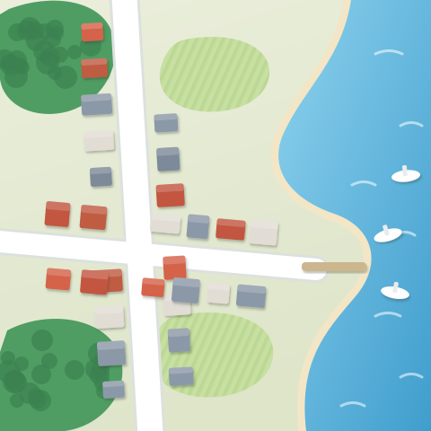

1 · Finn et sted
Let etter skolen din, en strand eller et annet sted du kjenner.
Finn et sted. Tegn det du ser. Vis fram kartet ditt!
Se på bilder tatt ovenfra. Finn hus, veier, skog og vann, og tegn ditt eget kart oppå bildet.

Let etter skolen din, en strand eller et annet sted du kjenner.
Velg en farge og tegn rundt hus, skog og vann. Tegn en strek langs veien.
Se på alt du har tegnet. Trykk på en tegning for å se den nærmere.
Dra i kartet for å flytte det. Bruk + for å se nærmere. Finn et sted med hus, vei, skog eller vann.
Flytt og zoom til du ser området du vil tegne.
🔒 Zoom inn og tegn. Du kan bare flytte kartet innenfor området du valgte.